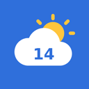
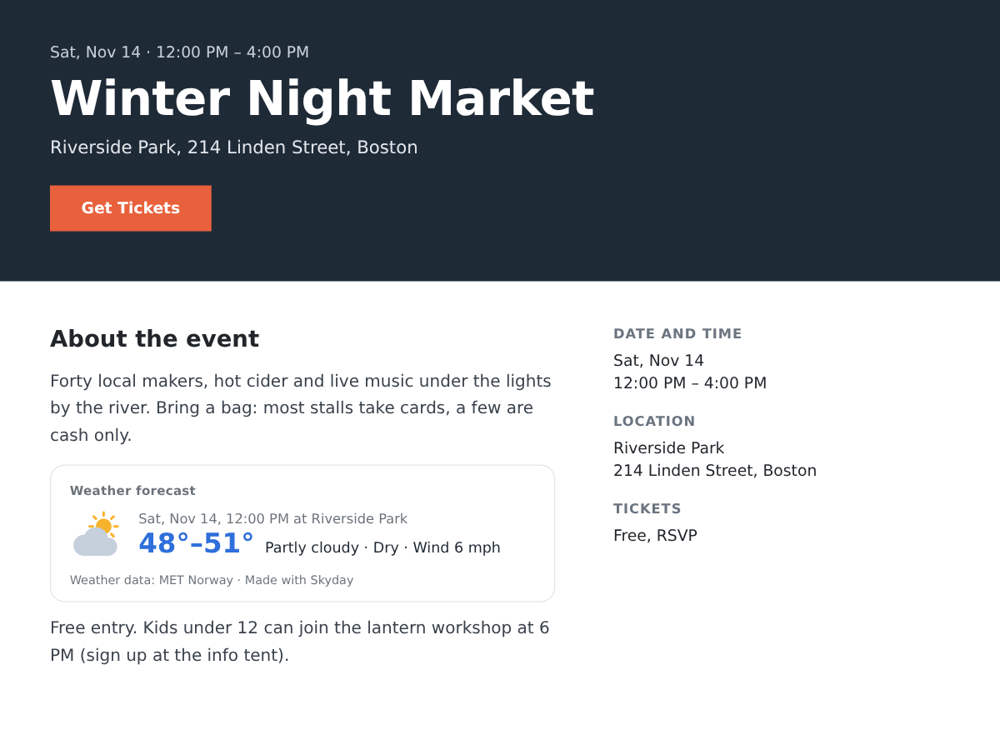

Skyday
Weather forecast on event pages and your site
- Forecast for each event's own date and place
- Says when a far-off forecast will appear
- Weather widget for your business address
- Hour-by-hour strip and a rain plan note

What it does
An outdoor event page answers every question except the one guests ask the night before: will it rain? This app adds the weather forecast to your event pages, for each event's own date, hours and address. A Saturday market from 5 to 9 PM in Riverside Park shows the sky, temperature, rain and wind for those hours at that park.
Forecasts reach about 9 days ahead. An event further out shows the date its forecast will appear Online events and events without an address show nothing. The data comes from MET Norway, the Norwegian weather service, and refreshes by itself.
There is also a weather widget for any page. It uses the address in your Business Info, so a café, garden centre or tour company gets "Weather in Boston" with today and the next three days without typing anything. You can point it at another place or at one of your events instead.
You can change the look and colours in the editor. Premium adds an hour-by-hour strip for each event, 7 days in the widget, °F or °C, the forecast in 7 languages, and a rain plan note that only appears when rain is forecast, such as "If it rains, we move into the hall next door."
The free plan shows a small credit link. Premium removes it.
Price
Free
- Event-day forecast on event pages
- Widget with today + 3 days
- Data from MET Norway
- Small credit link
Premium
$5/month, 20% off yearly. Hidden pre-made plan "Premium" (vendorId premium) stays hidden
- Hour-by-hour strip for event hours
- 7-day widget, °F or °C
- 7 languages and a rain plan note
- Remove the credit link